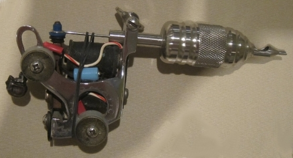
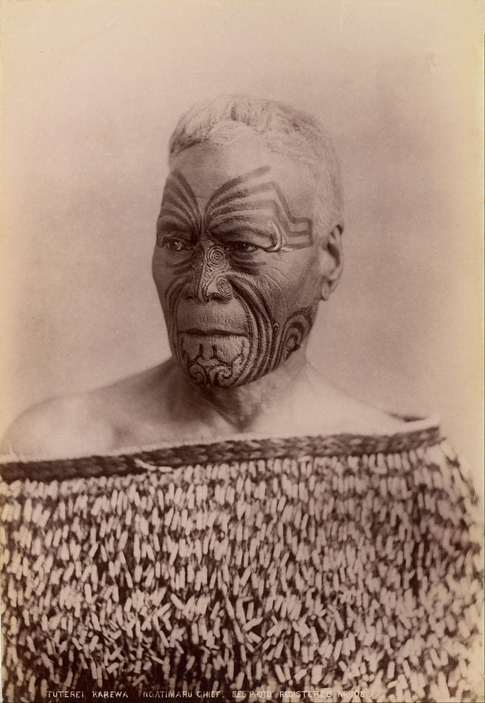

У різних культурах ставлення до татуювань було і залишається різним. У Стародавньому Єгипті, наприклад, мати їх могли тільки представники вищого стану, а в Японії і по сьогодні татуювання асоціюються з якудза і іншим кримінальним світом. Людей з татуюваннями на відкритих частинах тіла в цій країні часто не пускають в пристойні місця, причому навіть іноземців. Хоча півтори тисячі років тому в тій же Японії татуювання були імператорським привілеєм.
Тату і боді-арт в цілому мають довгу історію становлення і формування. Протягом всього часу накопичилося багато цікавих випадків, фактів і подій, якими ми вирішити поділитися з вам до Дня татуювання.
ЧИТАЙТЕ ТАКОЖ
===============================У вісімнадцятому столітті, коли мандрівник Джеймс Кук здійснив свою подорож на Таїті, він привіз до Європи мешканця острова, тіло якого було повністю прикрашено різними малюнками. Вважається, що саме після цього випадку європейці почали так цікавитися натільними малюнками.
Тату-індустрія в сучасному світі величезна, особливо в країнах Заходу. В одних Сполучених Штатах населення щорічно витрачає понад півтора мільярда доларів в тату-салонах, і це лише офіційна статистика.
Саме в США була винайдена перша тату-машинка, причому ще у 1891 році.
Деякі бренди практикують татуювання як спосіб реклами. татуювання як спосіб реклами. Наприклад, компанія Гарлі-Девідсон дає знижку всім покупцям, на тілі яких присутній їх логотип чи назва.
Мистецтво татуювання було відомо ще стародавнім людям. Археологам вдалося виявити примітивні інструменти для їх нанесення на тіло, датовані десятим тисячоліттям до нашої ери. Нашим предкам татуювання теж були відомі, найстарішим згадками про них – близько півтори тисячі років.
Одні з найдавніших тату-традицій і донині існують в Новій Зеландії. Маорі, корінні новозеландці, вже багато століть часто покривають татуюваннями все тіло. Раніше ці візерунки на шкірі розкривали коротку біографіюрозкривали коротку біографію власника і були знаком його статусу, сьогодні ж це скоріше данина традиції.
Одні з найдавніших тату-традицій і донині існують в Новій Зеландії. Маорі, корінні новозеландці, вже багато століть часто покривають татуюваннями все тіло. Раніше ці візерунки на шкірі розкривали коротку біографію власника і були знаком його статусу, сьогодні ж це скоріше данина традиції.
 На фото вождь народу маорі, кінець XIX – початок XX століттяНе буває тимчасових татуювань. Татуювання можна звести, але це складний, дорогий і болючий процес, до того ж без гарантованого результату. Та й шрами після нього все одно можуть залишитися. Чорні пігменти – найлегші для видалення за допомогою лазера. Чорний колір поглинає більше лазерних променів, ніж будь-який інший колір, що дозволяє більш ефективно руйнувати пігмент.
Найскладнішими кольорами для видалення є зелені та жовті відтінки. Існує кілька видів виведення татуювань: хімічний – за допомогою хімічних речовин; термічний – за допомогою лазера; механічний – шляхом зрізання верхніх шарів шкіри.